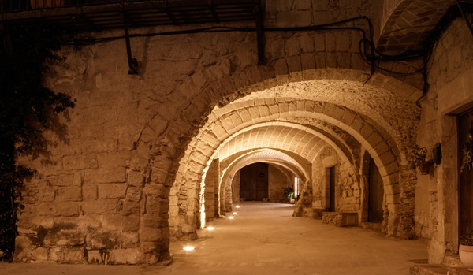

Los pueblos más bonitos
Los pueblos más bonitos

A pocos kilómetros de las mejore calas y playas de la Costa Brava, el pueblo de Peratallada se encuentra situado en la província de Girona a medio camino de Barcelona y también de la frontera francesa.
Peratallada es un bonito pueblo medieval situado en la comarca del Baix Empordà. Es conocido por sus callejones empedrados, sus casas de piedra y su castillo. Su casco antiguo está rodeado de murallas y torres de defenda construidas en el siglo XI para la proteger a la población. Sus callejones son el resultado de la historia del pueblo y hacen que caminar por ellos sea una autténtica experiencia. Por tod esto,,Peratallada es considerada una de las localidades con más encanto de la zona.